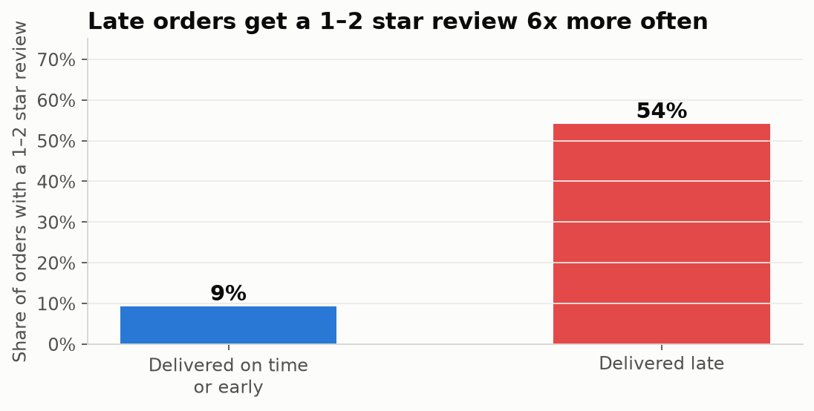

What drives bad reviews in e-commerce
Late orders get a 1–2 star review 6x more often, and fixing lateness alone would remove about 28% of bad reviews.
I joined 8 tables covering ~96,000 delivered orders, engineered delivery and order features, and compared bad-review rates by delay, order size, category and region. A logistic regression ranked the drivers, and I turned the results into four actions for a customer-experience team.
- Python
- pandas
- scikit-learn
- Matplotlib
- Jupyter
